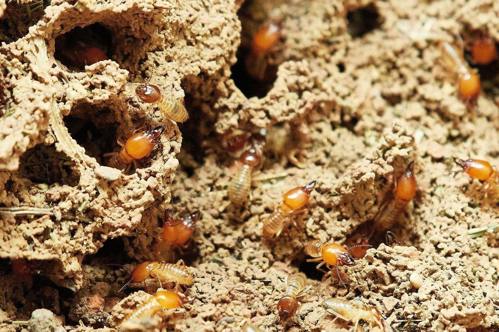
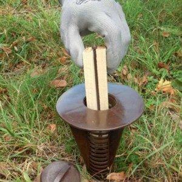
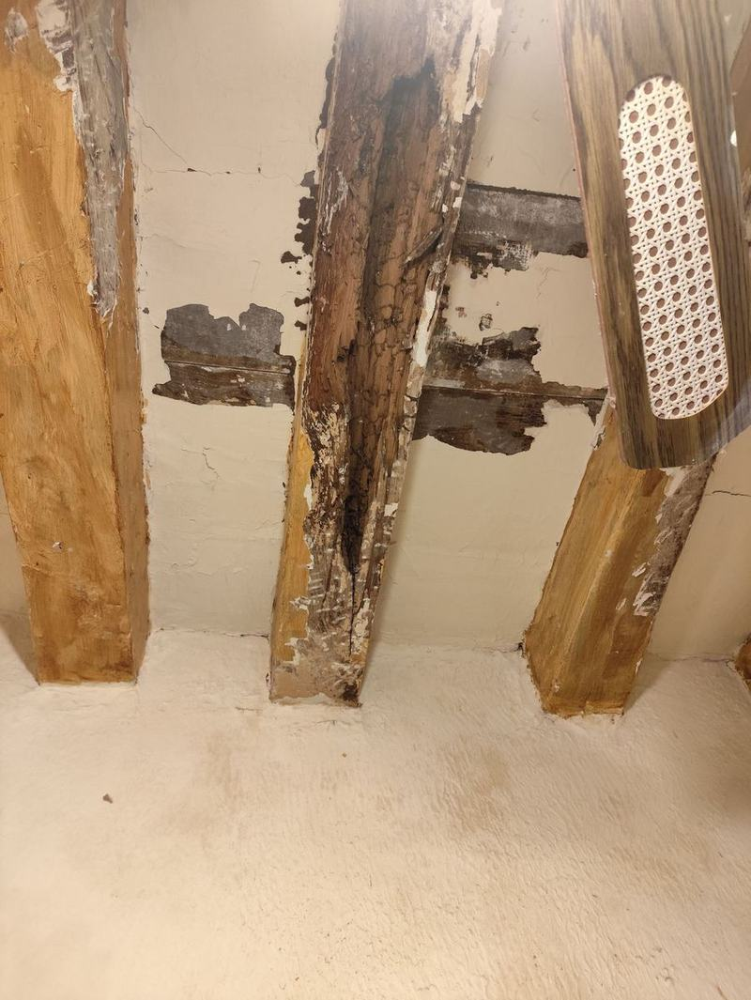
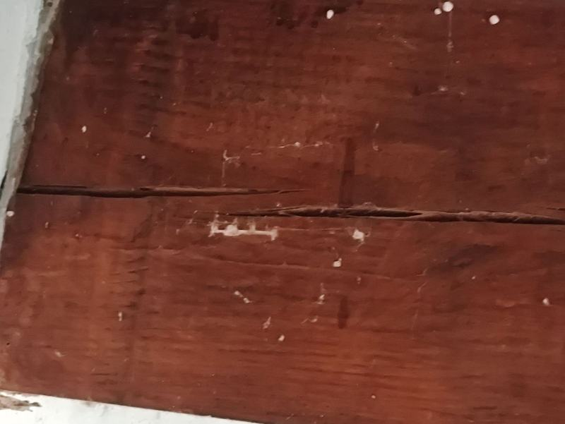
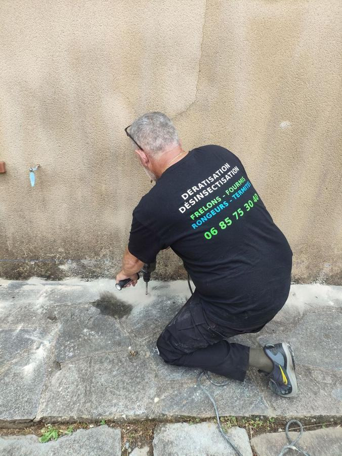
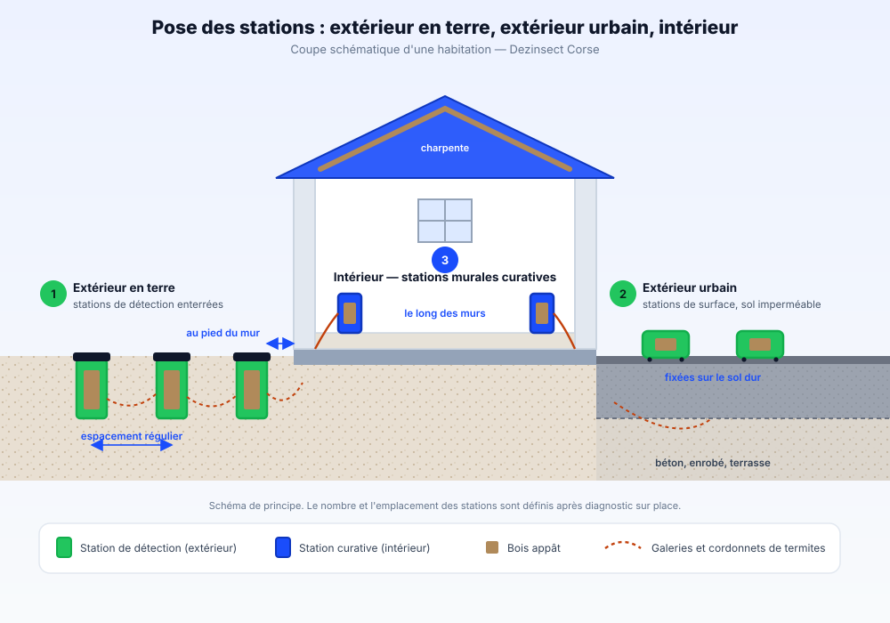

Traitement curatif et préventif contre les termites souterrains : injection du bâti, stations d'appâtage et contrôles de suivi. Toute la Corse est classée zone à risque par arrêté préfectoral.

Le termite en Corse : espèces et signes d'alerte
Les espèces présentes en Corse
Termite souterrain (Reticulitermes lucifugus corsicus) : sous-espèce endémique de Corse et de Sardaigne. C'est l'espèce responsable de la quasi-totalité des sinistres sur le bâti. La colonie vit dans le sol et remonte dans la maçonnerie.
Termite à cou jaune (Kalotermes flavicollis) : termite de bois sec, en petites colonies dans les bois morts et les arbres. Il ne se traite pas de la même manière que le termite souterrain.
Identifier l'espèce est déterminant : traiter un termite souterrain comme un insecte de bois sec revient à traiter la conséquence en laissant la colonie intacte dans le sol.
Ce que la loi impose en Corse
Les deux départements sont classés en totalité : la Corse-du-Sud par arrêté préfectoral du 20 juillet 2001, la Haute-Corse par arrêté du 27 novembre 2001. Aucune commune n'est hors zone.
À la vente : un état du bâtiment relatif à la présence de termites de moins de 6 mois doit être joint au dossier de diagnostic technique. Ce document relève du diagnostiqueur immobilier certifié.
En cas de découverte : l'occupant ou le propriétaire doit déclarer le foyer en mairie.
En construction neuve : des dispositions de protection contre les termites s'appliquent au bâtiment.
Signes de présence à repérer
Cordonnets de terre : tunnels de quelques millimètres courant le long d'un mur, d'une plinthe ou d'un soubassement. C'est le signe le plus caractéristique du termite souterrain.
Bois qui sonne creux : le termite consomme l'intérieur du bois en respectant une fine pellicule de surface. La poutre paraît saine et cède au sondage.
Essaimage au printemps : apparition d'individus ailés à l'intérieur, souvent suivie d'ailes abandonnées près des fenêtres.
À la différence des capricornes et vrillettes, le termite ne laisse ni trou de sortie visible, ni sciure au sol. Une vermoulure au pied d'une poutre oriente vers un autre insecte du bois.
Nos traitements professionnels anti-termites
Curatif profond
Injection au cœur des bois
Bûchage des parties vermoulues, perçage et pose d'injecteurs à clapet au cœur des charpentes et poutres pour détruire les larves de capricornes, vrilles et lyctus sous pression.

Éradication colonie
Pièges & appâts sol
Installation de stations piégées au sol (intérieur/extérieur) et de stations curatives murales. L'appât biocide est consommé par les termites ouvrières qui contaminent et éliminent définitivement toute la termitière.
Perçage des maçonneries de fondation et du soubassement, puis injection sous pression d'un termiticide dans les murs enterrés et dans le sol au pied du bâtiment. Cette barrière chimique continue coupe la voie que les termites souterraines empruntent depuis le sol pour rejoindre le bois de la maison.
Barrière protectrice
Pulvérisation & badigeonnage
Traitement préventif et complémentaire par double pulvérisation haute pression sur toutes les faces des bois mis à nu, empêchant la ponte et les re-contaminations futures.
Déroulé d'une intervention
1
Inspection sur place
Inspection des bois, charpentes et zones à risque (sondage, recherche de galeries et cordonnets) pour identifier l'espèce et l'étendue de l'infestation.
2
Devis & choix du traitement
Devis gratuit détaillant la ou les méthodes retenues (injection, appâts, pulvérisation) selon le type de bois, l'accès et le niveau d'infestation constaté.
3
Application du traitement
Mise en œuvre avec équipement professionnel (perceuse, injecteurs, pulvérisateur haute pression) en protégeant les zones non concernées de l'habitation.
4
Attestation d'intervention & suivi
Remise d'une attestation d'intervention détaillant le traitement réalisé, puis contrôles de suivi. Cette attestation ne remplace pas l'état relatif à la présence de termites exigé à la vente, qui relève d'un diagnostiqueur certifié.
Dégâts constatés & interventions en Corse

Charpente rongée par les termites

Galeries creusées dans le bois

Injection de traitement en façade
Foire aux questions — Termites
Les termites peuvent-ils revenir après un traitement ?
Le risque n'est jamais nul : la Corse est classée zone à risque sur l'intégralité de son territoire, et une colonie voisine peut coloniser à nouveau un bâtiment traité. C'est la raison pour laquelle nous associons le traitement du bâti à des stations de surveillance en périphérie et à des contrôles de suivi, plutôt que de considérer le chantier comme définitivement clos.
Peut-on traiter les termites soi-même avec un produit du commerce ?
Non, et cela aggrave souvent la situation. Un produit appliqué en surface tue les individus visibles sans atteindre la colonie, qui se trouve dans le sol et peut compter plusieurs centaines de milliers d'individus. Les termites contournent alors la zone traitée et l'infestation reprend ailleurs, généralement hors de vue.
Combien de temps dure l'efficacité d'un traitement anti-termites ?
Les produits biocides professionnels que nous utilisons sont conçus pour une efficacité de longue durée (de l'ordre de 10 ans selon le produit et les conditions du bâti). Il ne s'agit pas d'une garantie décennale au sens de la construction : Dezinsect Corse réalise un traitement anti-termites, pas des travaux de gros-œuvre, et recommande un contrôle périodique pour confirmer l'absence de nouvelle activité.
Quel document termites faut-il pour vendre un bien en Corse ?
Un état du bâtiment relatif à la présence de termites de moins de 6 mois, joint au dossier de diagnostic technique. Les deux départements corses étant classés en totalité par arrêté préfectoral, aucune commune n'y échappe. Ce document est établi par un diagnostiqueur immobilier certifié : Dezinsect Corse réalise le traitement, pas ce diagnostic réglementaire, et remet une attestation d'intervention qui en est distincte.
Intervenez-vous dans les villages d'intérieur et les combles d'accès difficile ?
Absolument. Dezinsect Corse dispose de matériel spécialisé (injecteurs haute pression, perches, matériel d'accès étroit) pour traiter les charpentes anciennes sur tout le territoire corse.
Combien de temps dure un traitement anti-termites par pièges de détection ?
Le système d'appâts agit par contamination en chaîne de la colonie. Selon la taille du nid et l'activité des termites, l'élimination de la colonie prend généralement entre 2 et 6 mois, avec suivi et contrôles réguliers.
Quelles zones de la Corse sont desservies par Dezinsect Corse ?
Dezinsect Corse intervient sur l'ensemble du territoire de la Haute-Corse et de la Corse-du-Sud, incluant Bastia, Ajaccio, Corte, Porto-Vecchio, Calvi, Aléria et l'ensemble des microrégions.
Les termites ne sont pas les seuls insectes à s'attaquer au bois : le capricorne des maisons creuse les charpentes résineuses pendant des années sans signe extérieur, et la mérule relève d'un traitement antifongique distinct. Voir le lexique des nuisibles.
Périmètre & zones d'intervention en Corse
Interventions sur l'ensemble de la Haute-Corse et de la Corse-du-Sud
Trois configurations selon la nature du sol et la localisation des termites. L'inspection détermine lesquelles s'appliquent à votre bâtiment et en quel nombre.

1 Extérieur en terre
Stations de détection enterrées en périphérie du bâtiment, au pied du mur, à espacement régulier. Le bois appât qu'elles contiennent est contrôlé à intervalles réguliers : c'est lui qui révèle la présence de termites souterrains avant qu'ils n'atteignent la structure.
2 Extérieur urbain
Quand le sol est imperméable — béton, enrobé, terrasse — la station ne peut pas être enterrée. Elle est alors fixée en surface, sur le passage des termites qui circulent sous le revêtement et remontent par les joints et les fissures.
3 Intérieur
Stations curatives murales, posées à l'intérieur le long des murs, une fois les termites localisés. Elles interceptent les insectes directement sur leur trajet et permettent de traiter la colonie à la source plutôt qu'en surface.